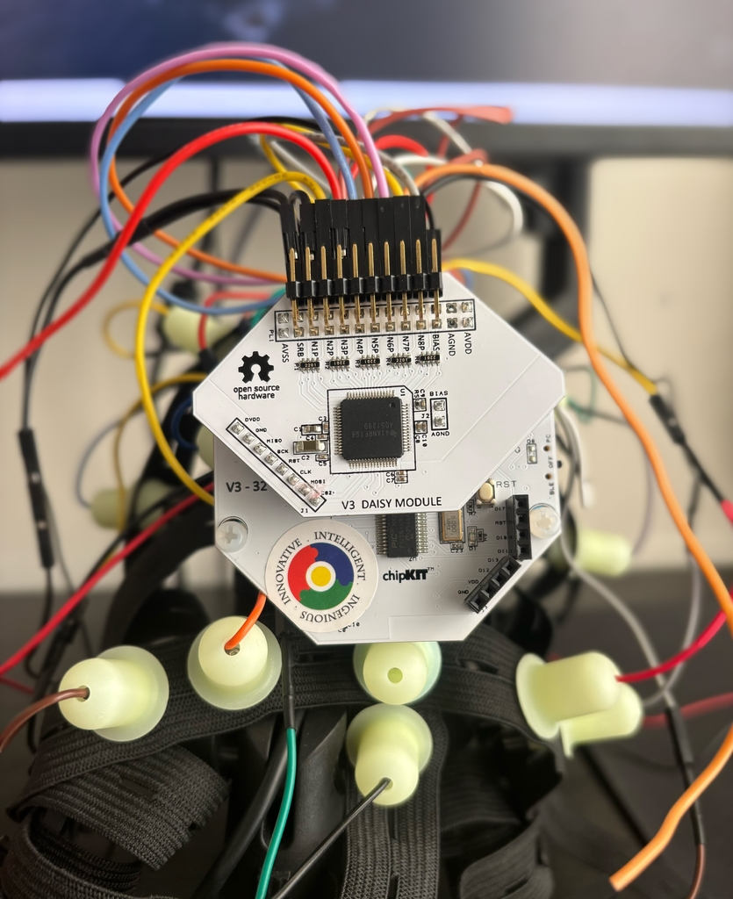
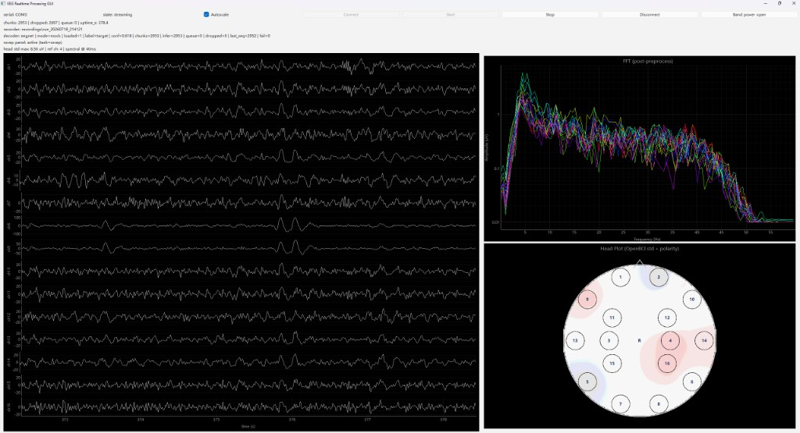
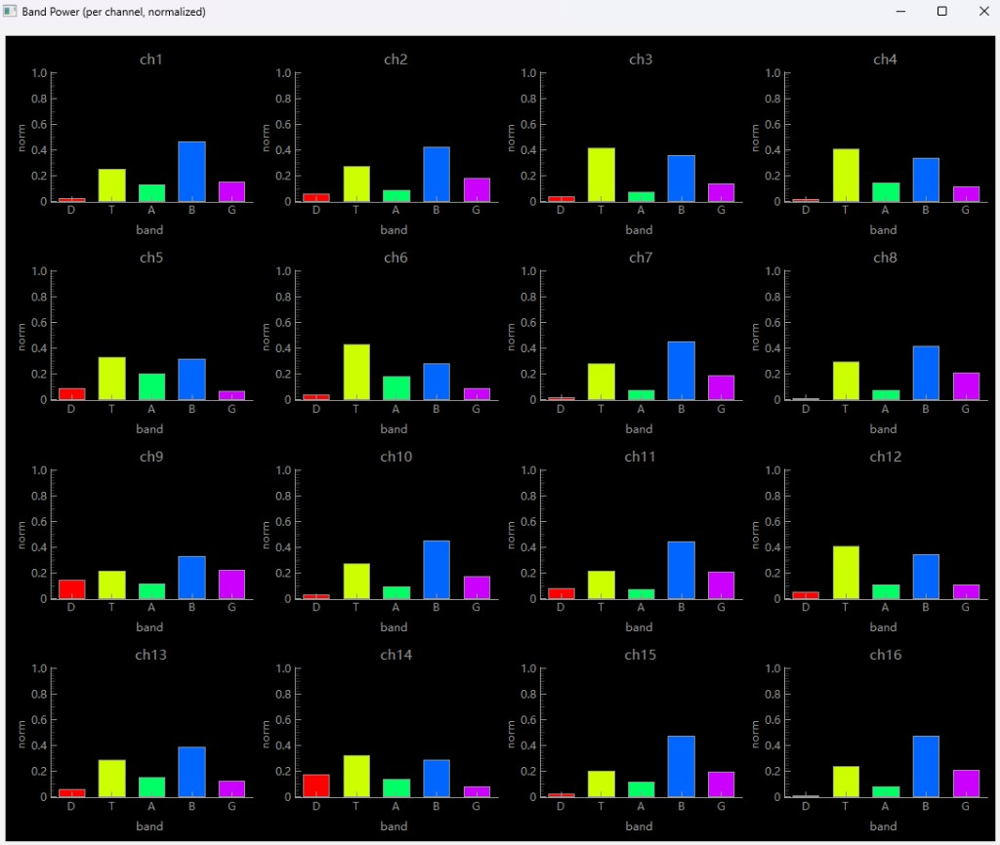

A closed-loop signal pipeline built for decoupled, lag-free visualization and online decoding.
Decoding neural intent from raw EEG. CortexStream turns scalp signals into a real-time research platform — acquire, monitor, and classify neural state within one integrated software stack.
Live GUI Filtered streaming · FFT frequency view · Std-dev spatial activation · Band-power monitoring
Physical front end for CortexStream: Cyton + Daisy with a dry electrode montage.

16 EEG channels at 125 Hz, streaming into the same pub-sub bus used by the GUI and decoder.
Wearable headband for gel-free scalp contact.
Acquisition, visualization, and decoding operate as independent subscribers on a shared pub-sub bus. Layer isolation preserves display latency under inference load and keeps model backends interchangeable.
GUI, recorder, and decoder subscribe independently with no cross-consumer blocking.
Bounded per-subscriber queues drop stale frames under load, keeping end-to-end latency controlled.
Each model ships a manifest.json specifying window, stride, channels, preprocessing, and labels for drop-in exchange.
Real-time monitoring views built on a shared filtered buffer.

16-channel filtered time series for direct signal visualization, post-preprocess FFT for frequency content, and a polarity-aware head plot for spatial monitoring.

Per-channel normalized δ/θ/α/β/γ histograms derived from the smoothed FFT amplitude.
A 22 s processing buffer is filtered with bandpass 4–40 Hz, then a 60 Hz notch and common average reference (CAR). The visible time series shows the last 6 s of that filtered buffer.
On the spectral clock, the last Nfft = 256 filtered samples are mean-centered,
Hamming-windowed, and transformed with a one-sided FFT. Amplitude is smoothed in log-power space
and plotted from about 0.1–60 Hz on a log scale.
Per-channel standard deviation over the last 1 s of filtered EEG sets intensity. Polarity is the sign of each channel’s dot product with the strongest-channel reference, then diffusion-interpolated across the 16-electrode montage.
From the smoothed FFT amplitude, single-sided PSD is summed in standard band edges (δ 1–4, θ 4–8, α 8–13, β 13–30, γ 30–55 Hz) and normalized per channel so the five bars sum to 1.
Capture EEG with trial markers during SSVEP sessions.
Check signal quality and class separability offline.
Extract labeled trials and prepare training windows.
Fit the decoder and export a versioned model package.
Replay saved data to confirm offline–online parity.
Load the manifest and run online SSVEP decoding.
No framework overhead — just the right libraries for each layer.
Streaming, GUI, preprocessing, training, validation, and decoder runtime — all on GitHub.